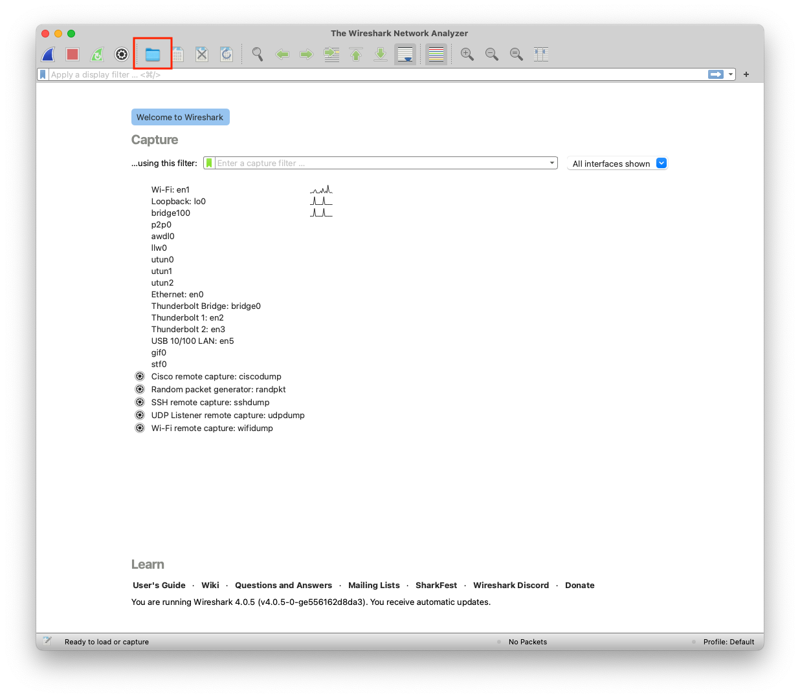
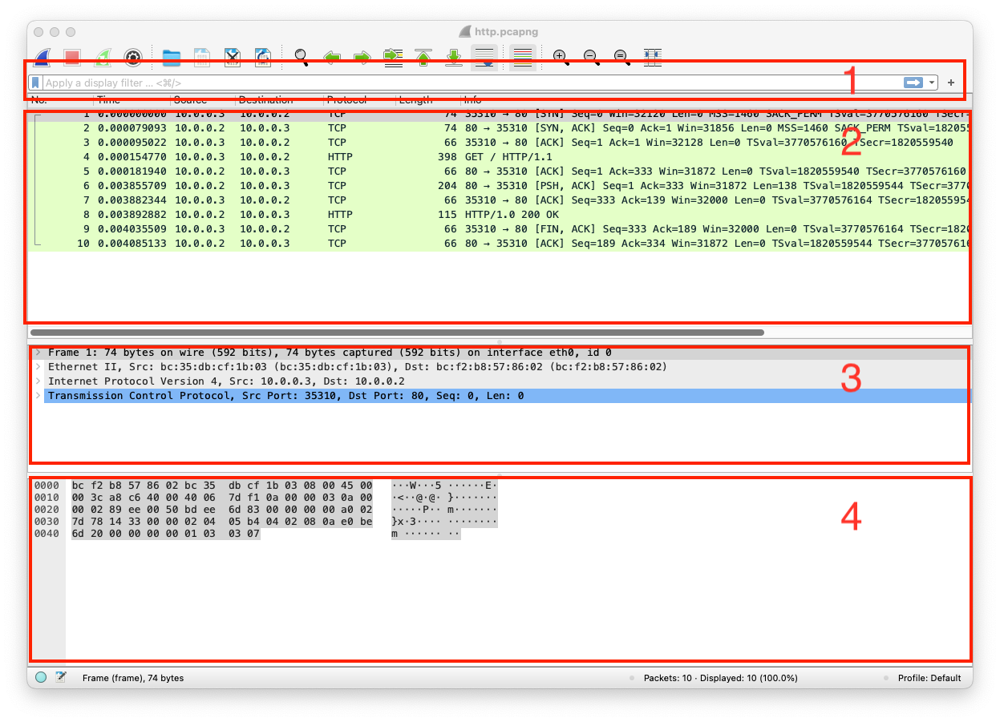

The pathways that help you communicate with others are computer networks, they are an essential part of our daily online communications
The methods and procedures taken to secure a network from unauthorized users\access
When so much of our information is online, whether personal, social, banking, medical, etc., privacy and security matter. The demand and importance of safeguarding our information is crucial
A protocol in networking is a set of rules that specify how data is formatted, sent, or delivered
A conceptual model consisting of seven layers that concludes how applications communicate over a network. It outlines the steps required to transfer data using a physical medium from a source to a destination on a network-connected device. It was created based on recommendations from ISO in the 1980s.
Layer 7 Application Firefox, Chrome Host Layer
Layer 6 Presentation ASCII, JPEG, GZIP Host Layer
Layer 5 Session HTTP, HTTPS, FTP, SMTP Host Layer
Layer 4 Transport TCP, UDP Host Layer
Layer 3 Network IPv4, IPv6, IPSec Media Layer
Layer 2 Data Link PPP, IEEE, L2TP, Ethernet Media Layer
Layer 1 Physical Cables, Wireless Media Layer
Layer 7 Application HTTP the client uses a web browser to send http data
Layer 6 Presentation GZIP handles the data format and compresses it (If applicable)
Layer 5 Session Socket opens a session for communication between source and destination (Web Server)
Layer 4 Transport TCP data is segmented, and each segment will have the source and destination port number
Layer 3 Network IPv4 converts segments into packets; each packet will have the source and destination IP address
Layer 2 Data Link Ethernet converts packets into frames; each frame will have the source and destination MAC address
Layer 1 Physical Coax converts frames into bit-stream and send the data over the physical medium
Layer 1 Physical Coax converts bit-stream into frames
Layer 2 Data Link Ethernet merges all frames into packets
Layer 3 Network IPv4 converts packets into segments
Layer 4 Transport TCP converts segments into data
Layer 5 Session Socket data is kept
Layer 6 Presentation GZIP decompresses data and reverts the formatting
Layer 7 Application http the destination receives the client http data
Python has a built-in package called http.server that can be used as file server or a customized web server that handles HTTP(s) requests.
In the terminal, go to the directory that has the static content (files, images, etc..) and type python3 -m http.server, this serves the directory content to clients (Some threat actors utilize this method when they breach a network, Python is most likely running on the devices, so it's used to move data in the breached network). After running the http.server it will show if it was successful or not, and the port that's used
pc@mac~% python3 -m http.server
Serving HTTP on :: port 8000 (http://[::]:8000/)
You can either use a web browser or client to communicate with that server, the content URL in this case is http://127.0.0.1:8000
pc@mac~%curl http://127.0.0.1:8000
<!DOCTYPE HTML PUBLIC "-//W3C//DTD HTML 4.01//EN" "http://www.w3.org/TR/html4/strict.dtd">
<html>
<head>
<meta http-equiv="Content-Type" content="text/html; charset=utf-8">
<title>Directory listing for /</title>
</head>
<body>
<h1>Directory listing for /</h1>
<hr>
<ul>
<li><a href=".bash_history">.bash_history</a></li>
The course content is built around a customized webserver that responds to HTTP GET requests, handles sessions/compressions, and logs requests. You may need to install a package called netifaces using pip3 install netifaces (In case you do not want to run the server or having issues with it, there is a Wireshark dump that was captured while interacting with the customized webserver, skip these steps)
pc@mac~% pip3 install netifaces
Then copy the following into a file (E.g. server.py)
from http.server import SimpleHTTPRequestHandler
from socketserver import TCPServer
from io import BytesIO
from gzip import GzipFile
from datetime import datetime
from contextlib import suppress
with suppress(Exception):
from netifaces import gateways, ifaddresses, AF_INET, AF_LINK
print("The default network interface is: ",gateways()['default'][AF_INET][1])
print("The default network interface mac address is: ",ifaddresses(gateways()['default'][AF_INET][1])[AF_LINK])
class Server(SimpleHTTPRequestHandler):
def do_GET(self):
compressed = False
content = b'<HTML><h1>Hello World!</h1></HTML>'
if len(content) > 0:
if 'accept-encoding' in self.headers:
if 'gzip' in self.headers['accept-encoding']:
bytes_ = BytesIO()
with GzipFile(fileobj=bytes_, mode='w', compresslevel=5) as f:
f.write(content)
f.close()
content = bytes_.getvalue()
compressed = True
self.send_response(200)
if compressed:
self.send_header('content-encoding', 'gzip')
self.send_header('content-length', len(content))
self.end_headers()
self.wfile.write(content)
def log_message(self, format, *args):
print("[{}] - {}:{} - {} {}".format(datetime.now().strftime("%m/%d/%Y %H:%M:%S"), self.client_address[0],self.client_address[1],args[0],args[1]))
TCPServer(('0.0.0.0', 80), Server).serve_forever()
Then run the file as Python script with elevated privileges, the reason why you need to elevate privileges because the customized webserver is using port 80 (Port below 1024 can be open only with elevated privileges, E.g. root)
pc@mac~% sudo python3 server.py
The default network interface is: eth0
The default network interface mac address is: [{'addr': 'bc:f2:b8:57:86:02'}]
You can either use a web browser or client to communicate with that server, the content URL in this case is http://127.0.0.1:80
pc@mac~%curl http://127.0.0.1:80
<HTML><h1>Hello World!</h1></HTML>
A tool or device for capturing and analyzing packets of data traveling in a communication channel. Click on open a capture file, then open the dump from the Start Here Module or this link

There are four important sections in Wireshark
